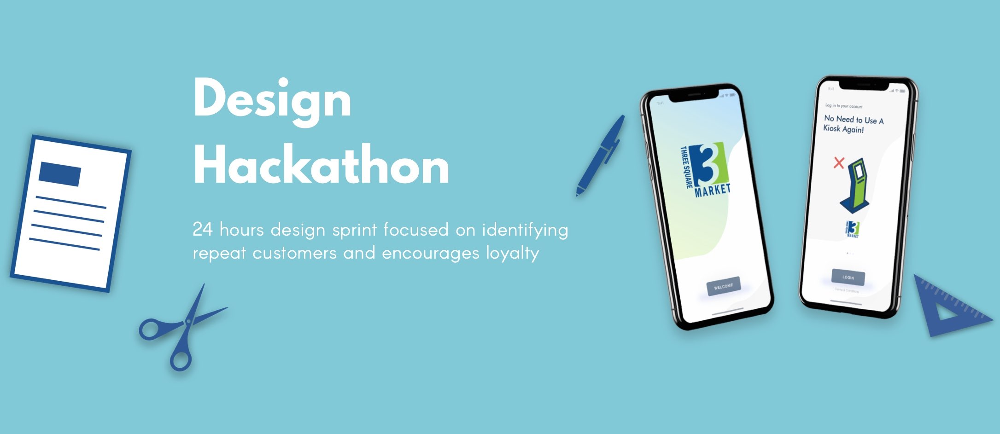
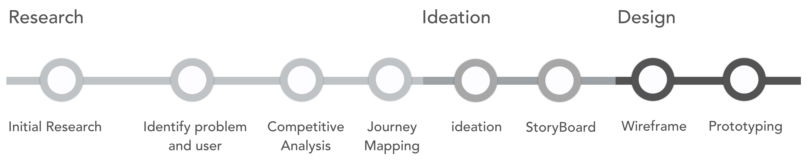
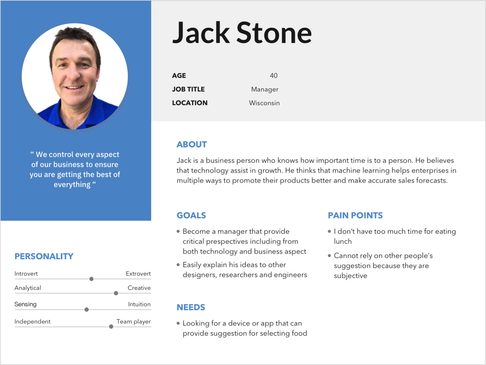
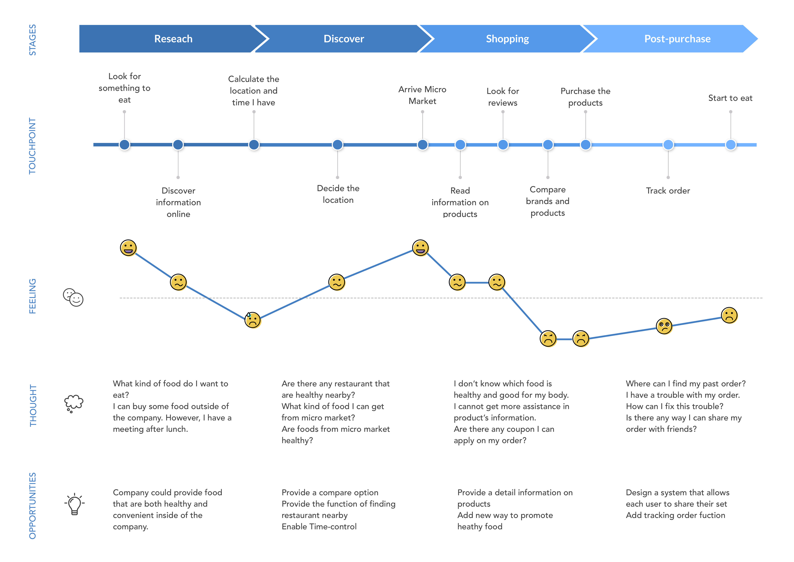
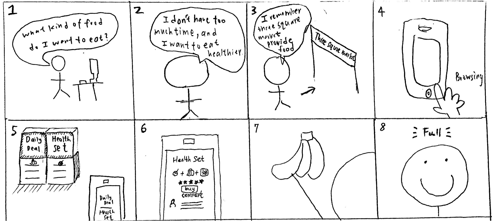
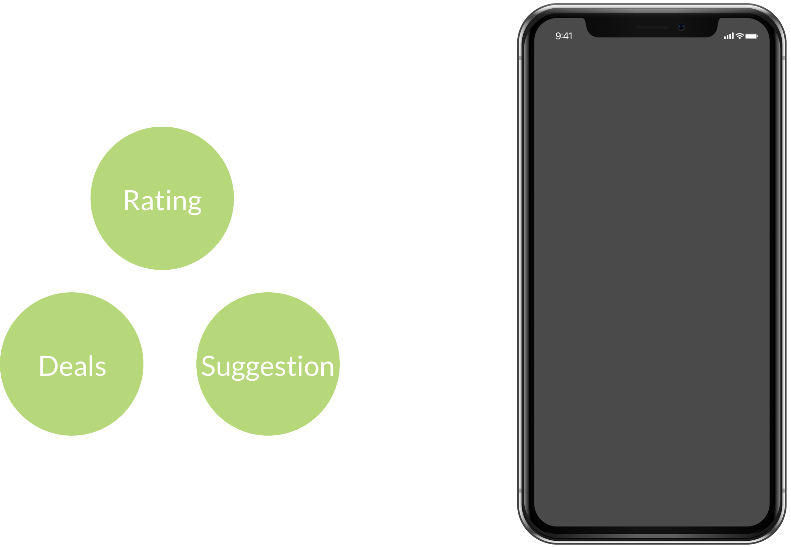

03/24/2018 - 03/25/2018
Lead Researcher, Prototyper, Interaction Designer
Jeremy Chen, A-Tasi
Secondary Research, Competitive Analysis, Journey Mapping, Ideation, StoryBoard, Wireframe Prototyping
InVision, Sketch, Photoshop
3rd Place
There is a tremendous need for consumer statistics in the vending and micro-market industries. Build a tool, solution or integration that identifies repeat customers and encourages loyalty by the way they use vending machines/micro-markets within 24 hour.
How might we design an good experience through providing healthy products for customers? By providing a set of healthy food, it customizes for customer's need and increases sales by differentiating from the competitors. Moreover, it helps company to encourage customer’s loyalty.
The challenges for this hackathon is to provide a reasonable solution to solve the problem the company has. To come up with a rational solution, we have to structure the time schedule to meet the deadline. It is hard to conduct good UX research and turn those into useful insights within 24 hour. However, by following the process of design sprint, we set short-term and long-term goals of this project, and generate practical idea and turn those insights to real action.
Before the sprint started, Douglas Ferguson, CTO in Voltage Control, held a design sprint workshop for us to educate the techniques we can utilized for generating our idea.
 Workshop
Workshop
 Client Kick-off Meeting
Client Kick-off Meeting
Because we have to present our delivery within 24 hour, every piece of element has to be well organized. The earlier stages were focused on research, while the later stages involved ideation and design through wireframing and prototyping.
From our research, we learned that people are willing to pay more for healthier foods, including those that are GMO-free, have no artificial coloring/flavors and are deemed all natural.
“ Employees who eat healthy all day long were 25 percent more likely to have higher job performance. ”
Source: Health Enhancement Research Organization
Targeting customers trying to eat healthy, we framed our main research question:
How can we help Three Square Market to provide wide range of food that are healthy and beneficial for customers?
Since micro market concept brings convenient meal and snack options to the workplace, the employees are our targeted users.
 PersonaBy competitive Analysis, it helps us find out how other people solved the same design problems and explore approaches to solving similar problems.
After doing a competitive analysis of micro market, we knew that many company currently define healthy as providing fresh food for customers. We want to narrow our focus on providing multi-choice and healthy food for users. The definition of healthy food means not only fresh but also beneficial to customers.
Journey Mapping is told from the customer’s perspective, but also emphasizes the important intersections between user expectations and business requirements. Through Journey Mapping, it helps us understand the whole experience that the customers have when interacting with micro market.
 Journey MappingBased on journey mapping we got from research phases, we gain a general view on each pain points customers have in different stages. We prioritize as following:
Pain Point 1
People have a hard time to insure the set they choose is healthier than others at micro market.Pain Point 2
The information of discount is not clear enough on mobile or in store.Pain Point 3
Employee often has meeting after lunch. Time-control is important for them.
We then moved on to ideation, first translating our insights from research onto sticky notes and grouping them based on affinity. The resulting topics helped us understand which features would be important to include in our design. We used this to inform our storyboards.
We landed on a concept that came out of insights from our research: Because of limitation of time, employee often goes to micro market to grab some heathy food. However, they struggle with understanding which food is heathy. Moreover, when applying coupon on their order, the information is too complicated. The following storyboard outlines our initial concept.
 Storyboard
Principle 1
Inform product information from different perspectivesPrinciple 2
Matching term appeared from both real world and AppPrinciple 3
Concern in how much time does the user hasPrinciple 4
Ensure users are informed by the information of promotionWe include different functions within our application. For rating, it helps customers consider the food from other's perspective. For deals, it organizes deals information in one place. For suggestion, it reduce the time that customers need to spend for selecting.

We created a prototype using InVision to visualize the app transitions and have a published model that could be tested with users before development.
Evaluation process is needed to validate our design insight.
Conducting user interview will be useful for better understanding the whole experience customer has in the future.
Card sorting can be included in research process to validate information structure.